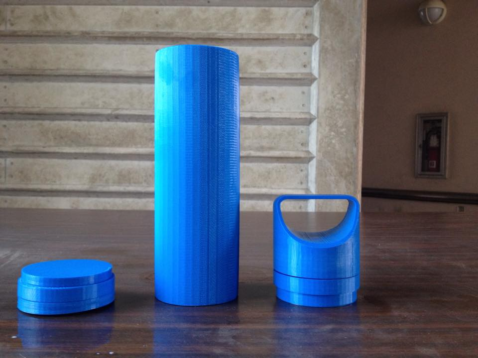
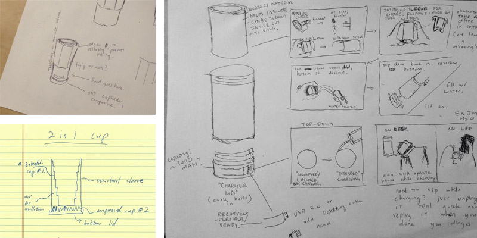
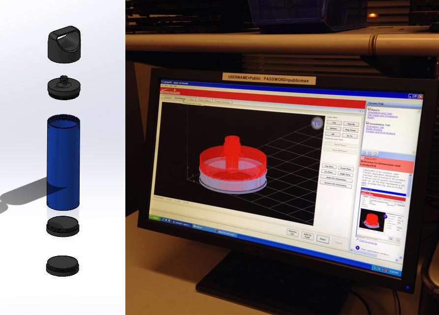
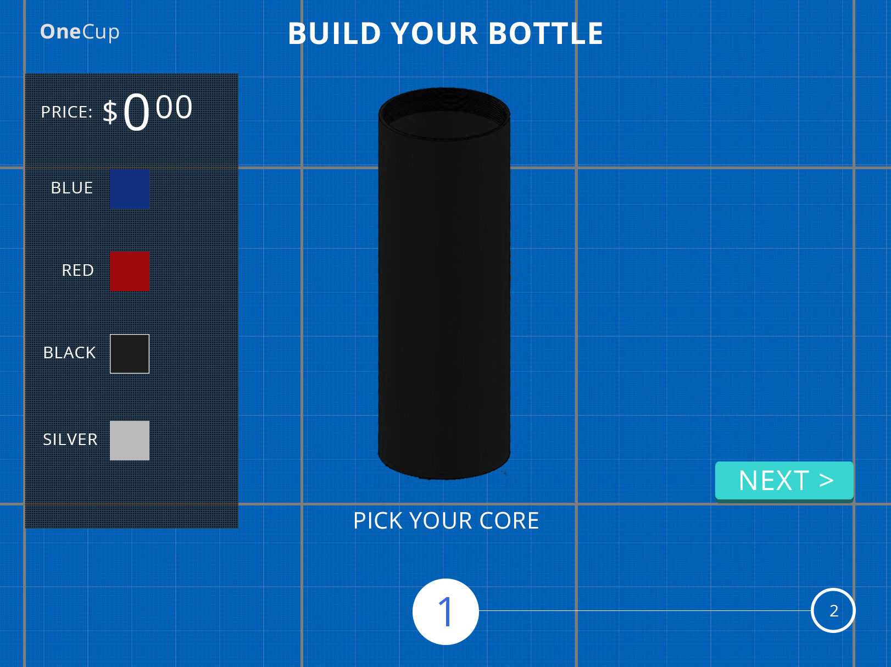

Introduction.
For the purpose of my mechancial engineering product design class, I worked for 10 weeks with a team of 5 students to design a physical project that could solve real user needs in a simple way. This was an interesting class for me in a few ways. For one, I have a decent amount of experience with design and programming, but I had never really dappled with physical products in any way. I now had to think about a very different set of concerns, such as prototype and manufacturing costs, production timelines, and consumer health concerns.
Early Needfinding and Ideation.
Trying to find similiarities amongst our group members, we quickly turned our attention towards something that all of our group could relate to: caring around a reusable water bottle.
Interestingly, the reasons that we had for carrying around our bottles were incredibly varying. Some of us even carried around more than one bottle to handle different events, such as one bottle to hold water and one to hold protein gainer for when he worked out.
Not only was there no one-solution-fits-all for those of us with multiple carry-around bottles, but there wasn't any real consensus amongst our group on what made a great standard water bottle. Each of us wanted slightly different things, and each of us had some gripes about our current bottle.
We set out to ask other busy college students if they had the same problems. We sampled 32 students from one campus apartments, 25 NCAA athletes, 10 gym goers, and 12 students who took the bus to campus. Amazingly, we saw a lot of the same trends from our group: no one really liked their reusable bottle, and everyone had very specific things they wanted to use their bottle for.
Another thing that nearly every person noted about there bottles was that they absolutely hated cleaning them. Getting the bottoms and the lids washed (and smelling clean) was a huge hassle for everyone. Many people eventually gave up on their bottles and would start using them again once they felt "kinda clean" or "clean enough." Some users we interviewed even bought new reusable bottles every few months because their old one felt too impossible to clean (doesn't that defeat the reusable part?)
This idea of a busy college student with multiple needs but is constantly on the go quickly became a guiding persona. It was clean this busibody needed a modern reusable water bottle that was easy to use and even easier to clean. It potentially had to fit small particular needs that varied widely amongst potential users, while making sure not to alienate other users.
We asked our interviewees how much they paid for their past solutions, or would expect to pay for the ones that they saw their peers using. Most students were comfortable paying about $30 for what they considered a solid water bottle, and those who were looking to replace their dysfunctionla current bottle tended to be willing to pay more.
The problem space seemed very real, so we decided to move into market research to see if this was a viable space to enter.
Market Research.
"The groundswell of demand has helped producers of stainless bottles experience a huge surge in sales, seemingly overnight."
- TIME Magazine
"Municipal water systems are aging. Environmentalists are castigating the makers of bottled water - and the people who buy it - for defiling the environment with plastic. All told, it is a great time to be selling water filters and reusable bottles."
- NY Times
The market for reusable beverage bottle is huge. In an interview with the Wall Street Journal, Newell Rubbermaid reports a market size of approximately $1.5 billion in the US alone. They match those high numbers with an interesting observation - this sizeable industry is incredibly fragmented, with users having little to no brand loyalty. This seemed to reflect our empirical findings from user studies, where students had lots of gripes with their bottle and were aching for a better one. This behavior suggests that this market has low barriers of entry, ideal for a startup without prior branding power to launch a new product line.
As Sam Altman of YCombinator loves to note, it's not just the size of the market, it's the future size of the market that's important. Again, we found a great fit; Nielsen Holding estimated that $12 billion was spent yearly on disposable water bottles in the US, and that these numbers were decreasing rapidly. This change is largely because of two factors: newer millenials have a strong desire to impact the environment, and many regions are implimenting regulations and/or fines to cut down on overuse of plastics.
I was initially surprised that reusable bottles were a $1.5 billion industry - I was even more surprised to find out that a $12 billion industry was quickly enroute to feeding into the reuseable bottle industry's expected upcoming hyper-growth.
Although more research into the cost structure for this type of product line would have probably been a good idea, from briefly looking over competitor financial reports, it seemed like something our team felt comfortable putting off until after we had decided exactly what components our product should entail to properly tackle the user problem.
Product Vision.
It wasn't very hard to realize from our user research that there were a few 'must haves' in our product. Easy to clean was very high on the list, as an overwhelming top complaint. The other problems seemed to suggest that our product would need to be highly customizabe, which was definitely going to be a design hurdle to think through. With all of this in mind, we hit the drawing board.
The conclusion we came to was rather elegant, and served both of our main user needs. Our reuseable bottle would have a removable top and bottom so you could reach your arm through the container to easily clean everything. This also meant that the tops and bottoms became modular, so people could have more freedom to pick the exact lid or attachment that they wanted while we could keep our costs down.
Suddenly a lot of doors were opened. We referenced back to a lot of the user interviews to see what types of drink containers people used, and how this could be adapted to fit our modular design. Many of the needs, such as blender springs, fruit/tea infusers, sweeze tip mouth pieces, and more were very possible to include as extra lid types you could purchase.
Again with costs in mind, we thought about the experience of purchasing the cup. To truly produce enough attachments to make this your one-stop travel cup need, we would need to make sure we bought in significant bulk. For this, we looked to sites like Kickstarter and Massdrop, which had an interesting business model. By promising to buy if enough people sign onto a purchase, they can ensure that bulk discounts will go into effect. By having a custom 'OneCup' e-store for building your own cup, we would cut middle-man seller costs and be able to provide a more detailed customization experience for a very reasonable price.
Our next step was to test the feasibility of our idea with a physical prototype.
Prototyping.
In order to properly emulate the experience we imagine for our 'OneCup,' we decided to 3D print a basic version of the design and try using it over the course of a week.
Using the mechanical engineering lab's computers and printers, we used autocad to whip something up for our physical prototype. It was so large that it took more than a day to print, but it created a fairly realistic experience for relatively cheap.
We ended up with the picture shown at the beginning of the article. It had several interlocking layered lids, so we could test a more customized version of what a user might actually have.
Without wanting to commit to much technical debt, we also opted to make the website ordering process into an Invision mockup. We used this fake ordering process to have user 'purchase' a bottle, and then persented them with the 3D model we put together to match whatever purchase they just made. 
User Reactions.
After personally using the bottle for an extended period of time, I can say it served as one of the most functional bottles I've used. It's notable flaw was actually just a product of the 3D printed material - after enough time, the plastic was porous enough that the water would seep through. This is easily avoidable by switching to any standard material, and was a prototype-only limitation.
Dirtying the cup and having others use it was easy too. Most users could tell without prompting that the lids on both sides were removable, and they had an easy time cleaning the bottle.
The default handle design that we worked on for a good chunk of time went over very well. A few users did not like it, but were easily satisfied with a quick swap for a flat top lid.
People who 'ordered' from the website found it to be reasonably simple and were satisfied enough wth the results of the system.
Moving Forward.
We felt fairly confident in our prototype after our extensive needfinding, prototyping, and subsequent user testing, so we began looking into what was needed for an actual bulk purchase.
After doing research into the materials used by most competitors, it seemed clear that Eastman Tritan was the clear material vendor for the copolyester plastic blend used for most of the bottle pieces. Tritan was durable, BPA-free, health tested, and trusted as a brand. And since they served as the vendor for our competitors, it was also something our team viewed as a 'playing-field-leveler.' If we are all made out of the same material, from there it's best product design that wins.
For other smaller components, we looked to Alibaba for pricings. This was an especially good tool for quickly making realistic estimates to include in our pitch deck.
including the cost of Tritan copolyester, injection molding, miscellaneous lid connective components, and packaging for 10,000 basic units, it would cost approximately $9.80 per bottle to manufacture, with our estimated base price being $30, leaving us with an estimated 200% profit yield.
Conclusions.
As per the class, we eventually pitched the idea to a panel of lawyers, IDEO product designers, and esteemed engineers from UCSD, who then evaluated our idea.
Judges encouraged students to continue the idea after the course ended, but with the collective schedules of team (namely gradution times) and the overall lack of complete fascination with cups, we decided we would not be pursuing the project any further.
Despite the cut off on the product, I think I learned a lot. Like I mentioned in the introduction, this experience stretched my product design skills, giving me a perspective on what is needed for more physical products. I especially learned a lot doing research about the manufacturing process, and I'll take a lot of those lessons with me into other product development cycles.